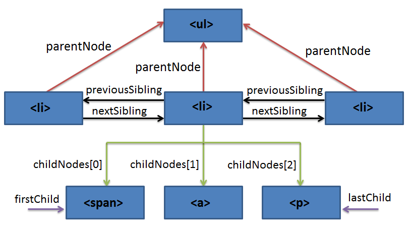

1. Навігація по DOM
DOM надає широкий спектр можливостей при роботі з HTML-елементом і його вмістом,
але для цього спочатку потрібно отримати посилання на елемент. Доступ до DOM
починається з об'єкта document, від нього можна дістатися до будь-яких вузлів.
Вузли HTML-дерева мають ієрархічне ставлення один до одного. Терміни ancestor (предок) , descendant (нащадок) , parent (батько) , child (дитина) і sibling (сусід) використовуються для опису відносин.
- У дереві вузлів верхній вузол називається кореневим (root node).
- Кожен вузол, крім root node, має тільки одного з батьків.
- У вузла може бути скільки завгодно дітей.
- Сусіди - це вузли із загальним батьком.
- Дочірні елементи (діти) - елементи, які лежать безпосередньо всередині
даного. - Нащадки - всі елементи, які лежать всередині даного, разом з їхніми дітьми,
дітьми їхніх дітей і так далі. Тобто все піддерево.

Ви можете використовувати наступні властивості для навігації між вузлами.
elem.parentNode- вибере батька elemelem.childNodes- псевдомасив зберігає всі дочірні елементи, включаючи
текстові.elem.children- псевдомасив зберігає тільки дочірні вузли-елементи, тобто
відповідні тегам.elem.firstChild- вибере перший дочірній елемент всередині elem, включаючи текстові вузли.elem.firstElementChild- вибере перший дочірній вузол-елемент всередині elem.elem.lastChild- вибере останній дочірній елемент всередині elem, включаючи текстові вузли.elem.lastElementChild- вибере останній дочірній вузол-елемент всередині elem.elem.previousSibling- вибере елемент "зліва" від elem (його попереднього
сусіда)elem.previousElementSibling- вибере вузол-елемент "зліва" від elem (його
попереднього сусіда)elem.nextSibling- вибере елемент "справа" від elem (його наступного сусіда)elem.nextElementSibling- вибере вузол-елемент "справа" від elem (його
попереднього сусіда)
DOM-колекції, такі як childNodes і children —
псевдомасиви, у них немає більшості методів масивів.
Типи даних вузлів і колекцій на MDN
2. Пошук DOM-вузлів
Отже, ми вже знаємо що DOM-вузол це об'єкт. У нього є методи і властивості. Саме час навчитися знаходити елемент за довільним CSS-селектору.
Методи elem.querySelector * це сучасний стандарт для пошуку DOM-вузлів. Вони
дозволяють знайти вузол або групу вузлів по CSS-селектору будь-якої складності.
elem.querySelector(selector)
Використовується коли ми свідомо знаємо, що відповідний елемент тільки один.
- Повертає перший знайдений елемент всередині
elem, відповідний CSS-селекторуselector. - Якщо нічого не знайдено, поверне
null.
elem.querySelectorAll(selector)
Використовується, коли ми свідомо знаємо, що підходячих елементів більше одного.
- Повертає псевдомасив всіх елементів всередині
elem, що задовольняють
CSS-селекторуselector. - Якщо нічого не знайдено поверне порожній масив.